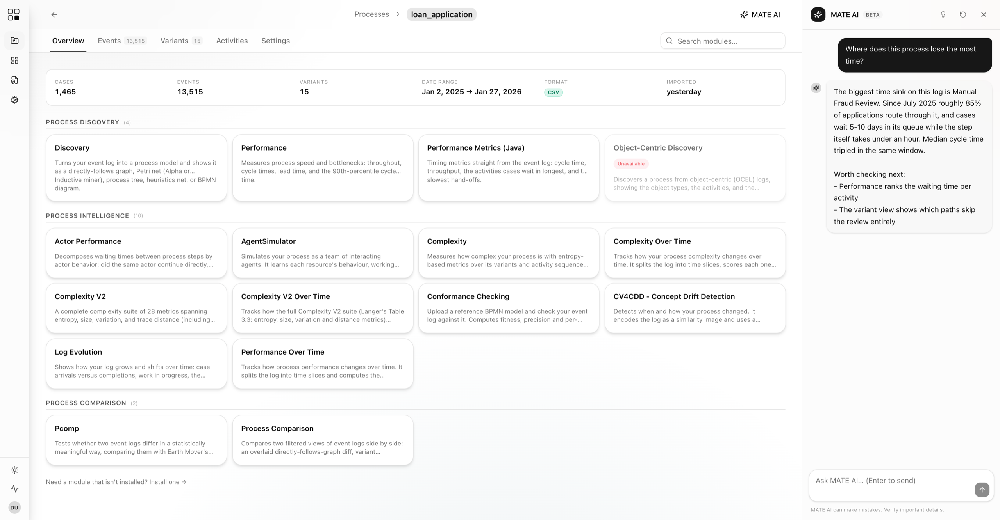
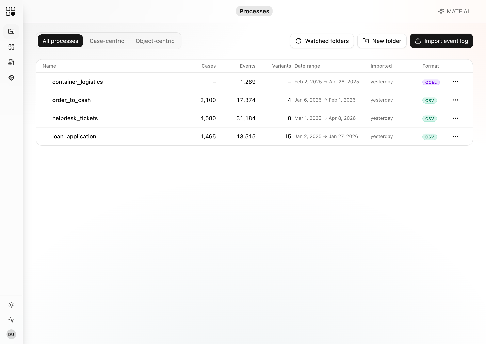

Share your work with the process science community.
PM-MATE runs in the browser: analysts upload event logs and work with research-backed modules, researchers publish their methods as modules that anyone can run. Contributing is a manifest and a handler class, so methods leave their repositories and get used.

The platform: one process, its module library, and the MATE AI assistant.
Code becomes a tool the moment someone else can run it. PM-MATE is where that happens.
Research moves fast. Tooling should keep up.
New process mining methods appear at every ICPM and BPM. Most remain prototype code in a paper's repository. PM-MATE gives them a runtime and an audience.
Both sides of the field
Analysts who know the process, not the code, get a guided workflow from upload to insight. Method authors get a sandboxed runtime, typed SDKs, and a generated UI for their parameters.
One analysis platform
Event data, models, and results live in one workspace. Import a log once, run any module on it, and compose the outputs into shared dashboards.
Methods as plugins
Upload a module archive and the platform unpacks it, resolves its dependencies, and registers it without a restart. Contributing takes a manifest and a handler class.
From raw event log to defensible insight
Import an event log, see how the process runs, and watch every long-running job stream its progress live.

The workspace. Four imported logs, one of them object-centric (OCEL).
One home for your event logs
Drop XES, CSV, or OCEL files into the workspace and start mining. Guided column mapping and automatic normalization handle messy exports. Watched folders import new logs as they arrive.
Built a method? Share it as a module.
A module is a folder: a manifest with metadata and academic sources, a handler class against a typed SDK, and an optional UI panel. The platform provides job scheduling, progress streaming, caching, dashboards, and isolation.
Typed SDKs for Python and the JVM
Write against mate.sdk in Python or mate-sdk-jvm in Java. Each Python module gets its own virtual environment. JVM modules ship as one self-contained jar.
Sandboxed by default
Modules run in-process or as supervised subprocess workers with hard timeouts and cancellation. They communicate through an event bus and typed capabilities.
Your citation travels with the module
The manifest carries your paper's citation and license, shown wherever the module appears. Users see whose method they are running.
Built for the people who study processes and the people who run them.
PM-MATE is open to everyone who works with processes, whether they write methods or apply them. These are the people behind the platform and its first modules.
Ship a module and your name joins this list.
Bring your method into application.
PM-MATE runs online. Open the platform, import an event log, and see your process in minutes. Building a method of your own? Say hello and ship it as a module.